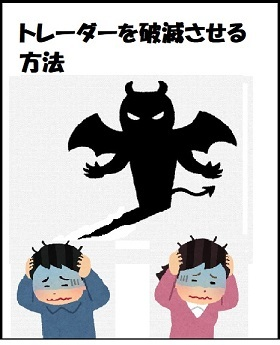

| FX ほったらかせば 金増える: ほったらかしの、楽ちん！FX（改訂版） (安定収入FX会) | |
| FXトレーダーおとん | |
| (2017) | |
はじめまして。
ネット上ではFXトレーダーのおとんと名乗っているものです。
ネットではなぜあだ名を使用しているのかというと、目立ちたくないからです。
投資ごとで、目立ってしまうことで得することってないんですよ。
下手に目立つと、銀行や証券会社なんかに目をつけられることもあるわけじゃないですか。
現在は色々なところの目を気にしなくてはいけない時代になってきました。
１０年くらい前は、言いたい放題言えたのですが、ネットの普及に伴って目立つことのリスクが増しているように思います。
メルマガとかの閉鎖的なツールであれば1対1の話ができるのでまた違ってくるんですがね。
そんなわけで、変なあだ名ですが気にせず読み進めていただけると嬉しいです。
現在私のFX歴は２０年以上なので、本当にFXが日本で取り扱われるようになった初期の頃からずっと続けていることになりますね。
実はFXって退場してしまう人が多いんです。
調子が良さそうにしていても５年も経たずに消えてしまう人が後を絶ちません。
なのでキャリア２０年超えというのはかなり少ないのでは、と思っています。
ブログで私がFXを始めたきっかけについてもお話しているのでここに引用します。
ちょっと長いですがよかったら読んでみてくださいね！
↓始めてすぐに数億円溶かした話とかを書いています（笑）
私がFXを最初に始めたのは、今から20年以上前になります。
始めた理由は、それ以前から先物取引や株式投資をやっていたんですが、
その流れで相場というもの自体に興味を持っていき、自然とFXに行きついた、ということです。
外貨取引ということで、お金でお金を生み出す、という考え方が気に入ったこと。
労力を使わずに楽に儲けられるやん！と考えたことも理由ですね。
まあ、今も昔も楽して稼げることが大好きだということです笑
その当時のFXの取引は、今と違って、銀行との直接取引でした。
現在はチャートを見ながらパソコンを使ってポチっとやれば取引できますよね。
本当に便利な時代になったと思います。
私も始めてみたときは、もちろん右も左もわからないわけです。
ただ、その時は社長業をやっていたので、お金は腐るほど持ってました。
だからとりあえずで1億円証拠金積んで、ドル円に思いっきりつっこんだんです。
どうなったかわかりますか？
1時間で1億円が溶けました笑
最初は何が起こったのかわからずポカーンですよ。
だって今の今まであったお金が根こそぎ消えているわけですから。
もうそれが悔しくて腹立たしくて、
「絶対に勝てるようになってやる！」
と思うようになりました。
その後はFXの本を読みあさったり色々な人に聞いてみたりしました。
自分なりに勉強していったんですね。
そしてある時、転機が訪れます。
大学時代の恩師に有名な経済学の教授がいたのですが、その方の言ってくれたことが打開策となりました。
その方が言ってくれたことは、
「自分はFXのことを知っているわけじゃない。
でもFXも相場やろ？上がったり下がったり波があるよな？
・・・もうここまで言ったら分かるやろ？」
多くは語っていませんが、この言葉をもとに考えた結果、
絶対に負けようがない方法を考え出すことができました。
それが今、自分も実践し、生徒さんにも教えている方法です。
まあ、今の方法に至るまでに実験としてあと数億円を無駄にしてしまってはいるのですが。。。
でもそれがあったから私も生徒さんも20年以上負けなし、しかも体も心も楽ちん、という今のスタイルを確立できたんですね。
もうFXでは負けようがない、となってからスキャルピングなども勉強して出来るようになりました。
この順番はとても大事で、
1、まず絶対に負けようがない方法を身につける
2、それから大きく増やす方法も覚える
この順番でいくことを心がけてください。
1の状態になる事は1人でやると確かに難しいです。
でも、もうすでにその方法を知っていて実践している人に教えてもらうようにすれば簡単に習得出来ます。
私自身も生徒さんに教えていますからね。
ただ、教えてもらうとしたら、
少なくとも１０年以上は勝ち続けている人を選んでください。
始めて１０年すら経ってない人のノウハウなんて一時的に勝つだけのノウハウです。
ずっと勝ち続けられるよう方法を知っている人を選んでくださいね！
次章では、なぜ私が特にFXをおすすめしたいかについてお話します。
色々な投資をやってみた結果、最終的にFXが1番安定して稼げるという結論に至りました。
どんな投資だったとしても、基本的には同じ考え方で稼げるのです。
やり方は、FXでも株でも他の投資でも基本的には同じです。
どんなものでも相場には波があるので、一度やり方を身につけると応用が効くんですね。
そうして一通りやってみた結果、やはりFXが1番"確実性が高い"と思っています。
事実、私は今はFX一本です。
では、ここから私がFXをおすすめしたい理由を書いていきますね。
FXというのは、通貨なのでいきなり価値がゼロになるということが考えづらいです。
それは株なんかと比べてみるとよく分かります。
企業ってやはり倒産ということがあり得るんですよ。
経営状態が良いからといって安心できるものではありません。
不祥事や事件が何か起こったりすると一気に倒産まで追い込まれる、なんてことも今はありますよね。
それに比べて通貨はいちおう国家の保証のあるもの。
その国には当たり前ですが国民がいるわけですから、その通貨がまったく価値がなくなるということは考えづらいですよね。
それこそ核爆弾で国土が消滅したとなったら話は別ですがそんなことは通常ありえません。
国家の保証があるということは、ビットコインなどの仮想通貨よりも安全だと言える点でもあります。
また、FXは通貨そのものをやりとりしているわけではなく通貨ペアを使っています。
そのため、ある国の通貨が他の国の通貨に比べて価値がずっと上がり続ける、下がり続ける、ということは基本的にはありえません。
そうなったらその国の国民が生活できなくなってしまいますから。
つまり天井と底がある程度保証されているのが魅力なんです。
相場の中で、"1番安全な手法を構築しやすい"のがFXです。
あとはオマケですが。FXではスワップポイントが毎日もらえるというのもメリット。
これも株の配当金よりも便利ですね。
価値がいきなりゼロになることが少ない
基本的に底と天井がある
スワップポイントというオマケが毎日もらえる
だから本来ちゃんとやっていれば負けにくいはずのものなのです。
以上が、現在私がFX一本に絞っている理由です。
では、次章からこの本の主旨についてお話します。
この本では、私と私の生徒さんが実践している「楽ちんトレード」のことについて書いています。
このトレード方法では、最終的に
朝でも昼でも夜でもいいので、見られるときにチャートをチラッと、見る
↓
利益が出ているものを探す
↓
利益確定する
これだけで終わってしまうものです。
言葉にすると、
「あっ、利益出てるやん。はい、利益確定（ﾎﾟﾁｯ）」
といった感じです。
だから時間もかからずストレスもなく、確実にお金を増やせる、という方法です。
この説明をすると、
「自動売買ですか？」と聞かれますが、違います。
自動売買はけっこう問題が多いものなので、一切取り入れていません。
簡単に言うと、楽できるようなポジションの持ち方をする、というものです。
この本では、FXで一時的に勝つ方法ではなく、とにかく負けない方法について書いています。
どんなにお金を増やしても、最終的に負けてしまったらどうにもならないですよね。
お金というのは、人間が生きていくうえで一生必要になるものです。
だから一時的に儲かればそれでいい、という考えではなく、一生を通じて稼げていないと意味がないと思うのです。
FXには、華々しい成功談がたくさんあります。
半年で数億円稼いだ、とか、〇回のトレードだけで△ △ 万円稼いだといったお話です。
たしかにそれだけ一気に稼げたら素晴らしいと思いますし、自慢してもいいものでしょう。
でもそういった成功談を話している人たちってすぐに消えてしまうんです。
一時的に勝っていても負けてしまって消えてしまうんです。
ネットでも、ブログやなんかでそういう自慢に近い成功談を載せているものがありますよね。
でも内容を見てみると、証券会社の宣伝をしている人ばかり。
「あんたら絶対本当にトレードしてないだろ！」
とツッコミたくなりますよね。
そもそもFXでは短期間で一気に稼ぐ必要がまったくないのです。
私と、生徒さんが常に心がけていることがあります。
それは、
「大勝ちを狙わずに絶対に負けないこと。そして小勝ちを積み重ねること。」です。
そういうと、
「FXはわずかなお金で大金を動かせるのに、小勝ちを狙っているだけでいいんですか？」
「とにかく負けないようにするだけでいいんですか？」
という質問を受けることがあります。
たしかにFXでは大勝ちを狙うこともできます。
でもそれには大きなリスクがつきまとってしまいます。
大きく勝てればいいのですが、大きく負けてしまったらしょうがないですからね。
私は、FXに関して言えば、大勝ちを狙うのは大馬鹿だと思っています。
その理由は、
FXでは複利方式でお金が雪だるま式に増えるからです。
複利方式とはどんなものか？というと、↓で数字を使って示してみます。
例えばですが、
１カ月に資金の５％
だけ増やすことを目標にしたとします。
（小勝ちを重ねれば十分達成可能な数字だと思います。）
つまり１，０５倍ですね。
それを１年間続けたとしたら何倍になると思いますか？
１，０５の１２乗なので、約１，８倍です！
無理のない運用で資金が１、８倍ってすごいですよね。
では、それが５年続いたら・・・
１，０５の６０乗なので、約１８倍です。
ではでは、それが１０年続いたら・・・
１，０５の１２０乗なので約３４８倍になるんです・・・
もし最初に資金を１００万円用意していたとしたら
３億４８００万円ですよ。
このように、複利で増えるというのはとんでもなくすごいものなんです。
これをみたら、FXで大勝ちを狙おうなんて気が起きませんよね？
手堅く慎重に取引を行っていれば実現できるのです。
だから大勝ちを狙わない、そして負けないようにする、という方法が一番なんですね。
前回の章で、FXに大勝ちが必要ない、というお話をしましたね。
堅く堅く確実に、負けることなく小さい勝ちを積み上げていってください。
無理な大勝ちを狙わないだけで、精神的にも肉体的にもかなり楽になりますよ。
でも、楽ちんになるためにはすごく重要なことが１つあります。
それは、"モニター前から離れる。チャートをずっと見ている状態をやめる"ことです。
つまりほったらかしに出来るようにするわけですね。
よく、"FXを始めると寝られなくなる"という人がいます。
チャートって毎時間動くものじゃないですか。
だからその動きが気になって眠っていられなくなるそうです。
ひどい人になると、
「１時間おきに相場を確認して、また眠る、というのをしています。」
なんてことを言っていたりします。
そんなのずっと続けられるわけないでしょう！
そんなに体も時間も犠牲にしていたら、いつか限界を迎えます。
そういうときに人間はどんどん負けていってしまうんです。
だから私は生徒さんに、
「モニター前から離れるんや。チャートなんてチラっと見たら消しときな。」
と常に言い続けています。
モニター前にずっといると、当たり前ですがチャートが気になってしかたがなくなるでしょう。
そして持つ必要がないポジションをわざわざ持ってしまう。
それが損失につながってしまうのです。
この"チャートを気にして持つ必要がないポジションを持ってしまう病気"のことを、
"ポジポジ病"と呼んでいます。
このポジポジ病にかかると、必ず負けてしまうんです。
だから、チャートはあまり気にせず、モニター前から離れられるようにしてください。
モニター前でずっとチャートを気にしていたらポジポジ病にかかってしまう・・・
それは分かったけれど、チャートがどうしても気になる！という人は多いです。
ではここで視点を変えてみましょう。
なぜ、そんなにチャートが気になってしまうのでしょうか？
その理由は簡単です。
"チャートを気にしなければいけないような取引のしかたをしているから"です。
つまりチャートを気にしてモニターとにらめっこをしてしまう人は、"負けない方法"を取っていないということですね。
負けない方法をとっていないから、チャートの動きに一喜一憂するのです。
では、その解決方法も簡単です。
"チャートを気にしなくてもいいような取引のしかたをする"これが解決法です。
チャートを気にしなくてもいい取引のしかた、といってもよく分からないですよね？
少し常識外れに感じる方もいらっしゃるでしょう。
でもこれはすごく簡単な話。
「無駄なポジションは持たない。」
これを徹底するだけで解決してしまうものです。
FXをやっていると、誰もが一度はかかるポジポジ病。
これはFXトレーダーの特徴が大きく関わっています。
基本的に、トレーダーはトレードをしたいんです。
ポジションを持ちたいんですよ（笑）
本当は無駄にポジションを持つことなんてリスクを増やすだけのことなんですがね。
余裕を常に持っていれば基本的にFXは負けるはずがないんですから。
それでもポジポジ病にかかってしまうのは、実はこういう心理が関係しています。
心理学の用語に、プロスペクト理論というのがあります。
これは簡単にいうと、人間は利益を求めるよりも損失を恐れる気持ちの方が強い、というものです。
つまり、
「ここでポジションを持たなきゃ利益をつかみ損ねるんじゃないか？」
と考えてトレードをしてしまうのです。
でもこれって本当に危険な考え方ですよ。
別に持たなきゃ持たないでいいんです。
持たないことで"安心を買えた"と思えばいい。
そうすれば無駄なトレードを減らせるでしょう。
そして、持ちたい！と強く思うときがあれば持てばいいんです。
だからモニター前にずっとはりつかなきゃいけない状況って極めて不自然で、かつ危険なものなんです。
前にも言ったように、FXでは大勝ちはいらない。
それよりも負ける可能性を極めて低くすることが最重要なんです。
だから焦らずゆた～と楽～にやっていればいいんです。
FXでは時間を味方につけていれば、自然と小さい勝ちを拾えるものなのです。
FXでは、値段の上がり下がりで利益を得る以外にも、美味しいところがありますよね。
そう、スワップポイントです。
金利差益ともいって、通貨の金利差によって"利息"が得られるというものですね。
このスワップポイントは取引のおまけみたいなものです。
でもそんなオマケでも月に数パーセントは稼げるわけです。
FXでは時間を味方にすれば、自然とお金が膨らむようにできているんですよ。
だから無理をしないでゆた〜と構えて安全なトレードをしていればいい。
どうせ複利で増えるんだから5年か10年か後に何十倍かになっていれば嬉しいじゃないですか。
それを欲張ってすぐに稼ぐんだ！と思うことが危険の第一歩なんですよ。
持ちたいときだけポジションを持つ、あとはほったらかせるくらいの安全圏から出ない。
守りを固めて、もらえる時にもらう、この考え方をしていればFXほど安全な相場はないんですよ。
長期的な視野で見ていくと結果的にお金をどんどん増やすことができるんですね
ゆっくりちょっとづつ、積み上げるように稼いでいく・・・
そりゃあ、半年で数億円稼いだ！とかいう話に比べたら小さい話ですよ。
でも、序盤でお話したとおりFXでは大勝ちなんていらないわけです。
月に５％ ずつという小さな増加でも、５年続けるだけで２０倍近くになるんですよ。
別に３％ でもいいじゃないですか。
月に３％ の目標というのはちょっと小さすぎる気もしますが、５年続けたら約６倍です。
だから長期でゆるゆる稼いでいけば、本当にお金がどんどん膨らんでいくんです。
長い目で見て少しづつ増やせばいいや、と考えていれば無理なポジションを持つ必要がありませんよね。
無理なポジションを持たないので、チャートなんて毎日チェックする必要もないんですよ。
ブログに載せた私の生徒さんの体験談をちょっと載せておきます。
私が先生と出会ったのは今から１年くらい前。
その時は、先生からFXについて教わるようになるなんて考えてもいなかったです。
初めて会ったきっかけは、私の友人がもともと先生と知り合いだったから。
友人が、以前にかなり大きな企業の社長をやっていた人と知り合ったという話をしてくれたので、
「そんな人だったら会ってみたい。紹介してくれ！」
と頼み込み、会う機会を設けてもらいました。
最初は、そういった普通の人では経験しないような体験をしてきている人だから、
ぜひ話を聞いて参考にしたい、と思っていたくらいでした。
会ってみると、不思議なくらい話が合って、
「この人は本当に面白い人だなぁ」とすぐに思えました。
それから話題は自然とお金の話に。
（私が一番聞いてみたかったのはお金の話だったので。）
そうしたら、先生が
「今はほとんどFXだけで生活しとるで。」
と言ったのを聞いて、最初は
「は？この人は何を言っているんだ？
FXなんてギャンブルでしょ？安定して稼げるわけないじゃん！」
と思ったものです。
（思ったどころか実際にそう言いました（笑）もうちょっとソフトにですが。）
そうしたら先生が、
「あんな、ギャンブルとしてやるから負けるんやで。
投資としてやって、ちゃんとした方法でやればFXほど堅く稼げるものはないんやで。」
と優しく教えてくれました。
もちろん私の頭の中は「？」だったのですが、その後先生にほんの触りの部分だけを説明してもらいました。
そのちょっとした触りの部分のはずだったのですが、私の中に
「この方法は本物だ！」
という直感が芽生えたのです。
先生の方法はめちゃくちゃシンプルなのですが、
普通に取引しているだけでは絶対にたどり着かない考え方でした。
どのくらいシンプルかというと、実際に指導を受けるようになってから、
３０分くらい話を聞いただけで極意をつかめてしまうくらいの単純さです。
マジで小学生でも理屈はわかるようなものなんです。
でも、普通は絶対にたどりつかない考えなんです！
聞いてから、世間の人たちがいかに間違っていて、いかに失敗させられているかを思い知りました。
最初に先生に教えてもらったときは、寒くもないのに体が震えたのを覚えています。
私にとってはコペルニクス的転換だったわけですね。
考え方が、天動説から地動説に変えられたような。
（書いててよく分からなくなってしまいました。すみません。）
とにかく、３０分聞いただけで、
「これは勝てる！」
と思える内容だったわけです。
それからは、先生と実際に取引画面を見ながら操作を覚えながら、
一歩ずつ進んでいくことができました。
今はかなり資金も増えてきて更に安全に取引できるようになっているのですが、
始めたときも、先生が実際の取引を見せながら説明してくれたので怖い思いも一度もしていないくらいです。
ただ、やはり私も少し欲が強いほうなので、勝手なことをやって先生に注意されたこともあります。
例えばですが・・・
月曜の朝に、相場がいきなり動くことがありますよね。
知っている人も多いですが、「窓あき」というやつです。
月曜の朝ふとチャートを見たときに、窓あきを発見。
「窓あきの９割は埋まる。戻る。」というのを聞いたことがあったので、
「おお、ちょっと小銭稼いだろ！」
と思って、先生が決めてくれた方針とは別に、ポジションを持ってしまったのです。
それで数千円ですが利益を上げられたんです。
「おお、やったぜ。」
なんて思って調子に乗りそうになったのですが、それを先生が気づいてくれて、わざわざ電話をかけてきてくれました。
それでこんな感じに注意をしてくれたんです。（優しく優しくですが）
「あんな、○○ちゃん。（私の呼び名です。）
今朝、ポジション持ったやろ？まあ、別にあれはプラスになったからええねんけどな、
そういうのを繰り返すとポジポジ病にかかるで？
（ポジポジ病とは、チャートを気にして必要ないポジションを持ってしまう病気）
うちらがやっているのは、もうチャートなんてほったらかしで楽して稼ぐ、いうやつやろ？
だから最初に決めたとおりにまずはやらないかんで。」
こんな感じだったと思います。
最初に教えられた、
"チャートは気にせず楽に楽に儲ける"
という方針を一時的にでも忘れてしまっていました。
それに気づいて電話までかけて教えてもらえる、というのは本当にありがたいことでした。
先生がよく言っているポジポジ病にかかりそうになっていたんですね。
このポジポジ病、日本人はとくにかかりやすいらしいですよ(笑)
これを読んでくださっている皆さんも気を付けてくださいね！
こんなエピソードからも分かるように、先生には自分の家族と接するような親しさで面倒を見ていただいています。
先生の教えてくれた方法は無理がなく、負けようがない方法です。
この方法だと、FXがギャンブルではなく本当に投資になります。
安心安全楽らくで資金を増やしていけますよ。
私は今はけっこうポジションを持っていますが、下手したら二日に一回くらいしかチャートを見ません。
そのくらい楽な方法なので、ぜひこれを読んでくださった方にもおすすめしたいです！
この生徒さんは２日に一回くらいしかチャートを見ないそうです。
しかも普段は取引のことなんて全く考えていないんです。
負けないように、堅くお金を増やしていくのには、このくらいでちょうどいいと私も思います。
それでもまだ、
「FXはロマンだ！大きく勝ちを狙うんだ！」
という方はそれはそれでいいでしょう。
ただ私はその考えに一切賛同できませんし、私のノウハウがお役にたつことはないでしょう。
ゆるゆると気楽にやっていればお金は勝手に増えるのに、体も心も時間も犠牲にしてギャンブルをやろうとする人とは関りを持ちたくありません。
そういう人は、冷たい言い方ですが、好き勝手やっていればいいと思っています。
まともな思考の人であれば、楽に確実にお金が増えるなら、そっちの方がいいと考えるでしょう。
私はそう考えてくださる正常な方を応援したいです。
ここまでお話してきて、FXは実は投資として優れたものだということに少しでも共感いただけたでしょうか？
もしそうなら嬉しく思います。
そこで最後になってしまいますが、少し怖い話をします。
見出しの通りになってしまいますが、
実はFXでは、始めた瞬間から負けが確定している場合があるのです。
というか、９割くらいの人が始めから負けが確定している状況で始めているように思います。
それは単純な話なのですが、すごくはまりやすい罠があるのです。
普通に何の前情報もなく始めてしまうと100％ はまる罠です。
その罠については、こういった多くの人の目に触れるところでは言えないことです。
その理由は私自身が、証券会社などに目をつけられたくないからですね。
このことについては、私のメルマガ（８通だけ）でも触れているものです。
たった８通だけで負担がないので、もしよかったら登録してみてください。
→たった８通の無料メルマガ（負ける９割に入らないためのメルマガ）
メルマガの登録特典もご用意しています。
その名も、
"ちょっと怖いけどためになる「トレーダーを破滅させる方法」"
という小冊子です。

メルマガ登録するとすぐに読めるようになります。
以前は登録特典を付けていなかったのですが、FXで負けないために絶対に知っておいてほしい内容なので急遽作りました。
ぜひ読んでください。
メルマガ登録後すぐに読めます。
たった８通で終わるメルマガなのでお気軽にどうぞ！
FXは、他の投資ごとよりも間違った内容がはびこっているように思います。
それが誰のせいなのか、という話はここでは言えませんが、大体察しがつくと思います。
ほとんどの人は負けるべくして負けさせられているわけです。
今常識だと思われているところから抜け出して、客観的にFXというものを眺めてみると、負けない方法なんて誰でも気づくものです。
実際、私が生徒さんに最初に教えるときには３０分ほど話しただけで、
「こんなん絶対に負けるわけないじゃないですか。」とか、
「なんでこんなことに誰も気づかないんですか？」と言ってくれます。
こんな３０分ほどの指導でも間違った常識から抜け出せるものなのですが、それなのにFXで負ける人が後を絶ちません。
ほとんどの人は、教えてもらえる人がいないからですね。
なぜかお金や投資のことになると、自己流で何とかなると思う人が多いのです。
でも考えてみてください。
あなたは読み書きを自己流で習得しましたか？
スポーツをやっていた人は、誰かに指導されていたのではないですか？
どんなことをやるのにも、まず教えてくれる人がいましたよね？
でもこれがお金のことになるとなぜか自分だけで考えてしまうのです。
実際私も始めてすぐに１時間で１億円溶かす、ということをやりました（笑）
スポーツが上手くなるよりもお金のことのほうが人生では大事なはずなのに、本当に不思議なことですね。
この本を読んでくださったあなたは、ぜひ間違った常識から抜け出させてくれる人を見つけてください！
では、ここまでにいたします。
よかったら、メルマガでまたお会いしましょう！
登録特典である、
"ちょっと怖いけどためになる「トレーダーを破滅させる方法」"
もFXをやる人には絶対に必要な情報なのでぜひ読んでくださいね。
では、ここまで読んでくださってありがとうございました！